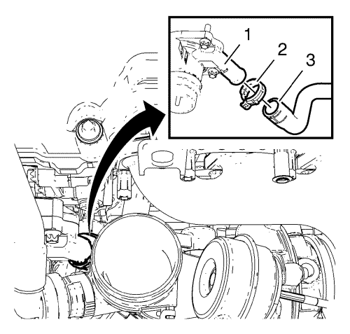
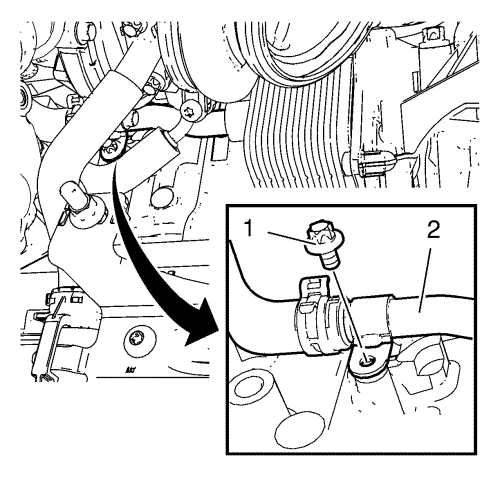

Cruze
Sustitución del tubo flexible de salida del refrigerador de aceite del motor — 1.4L LUH y LUJ
Procedimiento de desmontaje
Desconecte el cable negativo de la batería. Consultar
Desconexión y conexión del cable negativo de la batería
→
sin sistema de arranque/parada
Vacíe el refrigerante del motor. Consultar
Drenaje y llenado del sistema de refrigeración
Retire el conducto de salida del purificador de aire. Consultar
Sustitución del conducto de salida del filtro de aire
→
1.4L LUH y LUJ

Quite la abrazadera (2) del tubo flexible de salida del radiador de aceite.
Extraiga el tubo flexible de salida del radiador de aceite (3) de la carcasa del termostato (1).
Desmonte el catalizador de calefacción de tres vías. Consultar
Sustitución del catalizador de tres vías de calentamiento
→
1.4L LUH y LUJ

Quite el perno (1) de la tubería de salida del radiador de aceite del bloque del motor.
Extraiga la tubería de salida (2) del radiador de aceite junto con el tubo flexible de salida del radiador de aceite.
Quite la abrazadera del tubo flexible de salida del radiador de aceite.
Extraiga el tubo flexible de salida del radiador de aceite de la tubería de salida del radiador de aceite.
Procedimiento de montaje
Instale el tubo flexible de salida del radiador de aceite en la tubería de salida del radiador de aceite.
Coloque la abrazadera del tubo flexible de salida del radiador de aceite.
Instale la tubería de salida (2) del radiador de aceite junto con el tubo flexible de salida en el radiador de aceite.
Coloque el perno (1) de la tubería de salida del radiador de aceite en el bloque del motor y apriételo a
10 N·m (89 lib. pulg.)
.
Monte el catalizador de calefacción de tres vías. Consultar
Sustitución del catalizador de tres vías de calentamiento
→
1.4L LUH y LUJ
Instale el tubo flexible de salida del radiador de aceite (3) en la carcasa del termostato (1).
Coloque la abrazadera (2) del tubo flexible de salida del radiador de aceite.
Monte el conducto de salida del filtro de aire. Consultar
Sustitución del conducto de salida del filtro de aire
→
1.4L LUH y LUJ
Instale la tubería de alimentación del turbocompresor y la pantalla térmica del colector de escape. Consultar
Sustitución del tubo de alimentación de aceite del turbocompresor
Conecte el cable negativo de la batería. Consultar
Desconexión y conexión del cable negativo de la batería
→
sin sistema de arranque/parada
Añada el refrigerante del motor. Consultar
Drenaje y llenado del sistema de refrigeración
© Copyright Chevrolet. All rights reserved